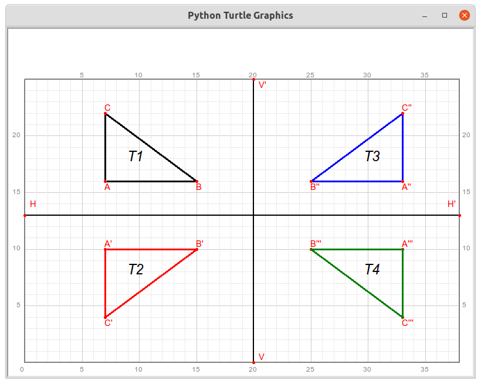

第25讲 水平或垂直镜像¶
Lecture 25. Mirror Horizontally or Vertically
Problem 问题描述¶
qianglib, draw a grid coordinate system where the origin (0, 0) is at the bottom left of the coordinate system.qianglib库提供的方法，绘制方格坐标纸，其中坐标系的原点(0,0)位于绘图区的最左下方，使用的scale值为20.Follow the steps below，draw a graph slimilar to the picture below. 跟随下面的步骤，绘制出类似如下图所示的图形。

Given the coordinates of the points ABC as A(7, 16), B(15, 16), C(7, 22), connect ABC in order to create a triangle. Draw this triangle use black color and line width of 3. mark every vertex with letters A,B, and C; mark the line AB with letter “b”; mark the triangle with “T1”. Give proper size to the markers; 给定三个点及其坐标A(7, 16), B(15, 16), C(7, 22)，依次连接ABC可以得到一个三角形。使用黑色、线宽为3，绘制这个三角形，用字母ABC分别标记每一个顶点，给这个三角形一个标记“T1”;
Given two points H(0,13), H’(38, 13), draw the line segment HH’ in black, mark the points H and H’; take the line segment HH’ as the axis of symmetry (mirror), for each vertex of the triangle T1, find the coordinates of the mirror point in the HH’ mirror, denoted as A’, B’, and C’ respectively; thus formed a new triangle A’B’C’, draw this with a red line width of 3 Mirror triangle, denoted as “T2”; 给定两个点H(0,13), H’(38, 13)，用黑色绘制线段HH’,标记H和H’点; 将线段HH’作为对称轴（镜面），找到三角形T1的每一个顶点A,B和C在HH’镜子里的镜像点的坐标位置，分别记为A’,B’和C’，形成一个新的三角形A’B’C’，用红色线宽3绘制这个镜像三角形，记为“T2”；
Given two points V(20, 0), V’(20, 25), draw the line segment VV’ in black, mark the points V and V’; take the line segment VV’ as the axis of symmetry (mirror), for each vertex of the triangle T1, find the coordinates of the mirror point in the VV’ mirror, denoted as A’‘, B’‘, and C’’ respectively; thus formed a new triangle A’‘B’‘C’‘, draw this with a blue line width of 3 Mirror triangle, denoted as “T3”; 给定两个点V(20, 0), V’(20, 25)，用黑色绘制线段VV’,标记V和V’点; 将线段VV’作为对称轴（镜面），找到三角形T1的每一个顶点A,B和C在VV’镜子里的镜像点的坐标位置，分别记为A’‘,B’‘和C’‘，形成一个新的三角形A’‘B’‘C’’，用蓝色线宽3绘制这个镜像三角形，记为“T3”；
for each vertex of the triangle T3, find the coordinates of the mirror point in the HH’ mirror, denoted as A’’‘, B’’‘, and C’’’ respectively; thus formed a new triangle A’‘’B’‘’C’’‘, draw this with a blue line width of 3 Mirror triangle, denoted as “T4”; 找到三角形T3的每一个顶点A,B和C在HH’镜子里的镜像点的坐标位置，分别记为A’’‘,B’‘’和C’’‘，形成一个新的三角形A’‘’B’‘’C’’’，用蓝色线宽3绘制这个镜像三角形，标记每一个顶点，标记三角形为“T4”；
For each vertex of the triangle T2, find the coordinates of the mirror point in the VV’ mirror; thus formed a new triangle. Draw this with a green line width of 3 Mirror triangle. Do not denote the vertices and the new triangle. The new mirror triangle should be completely overlapped with the triangle T4. 找到三角形T2的每一个顶点A,B和C在VV’镜子里的镜像点的坐标位置，新的镜像点形成一个新三角形，用绿色线宽3绘制这个新镜像三角形，不要标记顶点和三角形。这个三角形应该与三角形T4完全重合。
Math Background 数学背景¶
一个点和它的镜像点到对称轴（镜子）的距离相等，且点与其镜像点的连线构成的线段与对称轴垂直
复杂的几何图形可以由各个点依照一定的次序排列而成，图形的镜像可以看成是图形的每一个每一个顶点的镜像。
Prerequisites 预备知识¶
Mirror Horizontally or Vertically 水平或垂直镜像
如果你站在镜子前，镜子里会出现一个一模一样的你，你离镜子越近，你也会感觉镜子中的你离镜子也越近；你离镜子越远，你也会感觉镜子中的你离镜子也越远。镜子就相当于一个对称轴面，它把镜子外的人复制后按照一定的规律重新摆放在镜子里。在数学的几何中，也有类似的操作，可以设置一个线段当镜子，将点或各种图形镜像到一个新的位置，使得他们就好像在照镜子一样。这个充当镜子的线段称为对称轴，原来的点或图形称为原始图形，新得到的点或图形称为镜像图形。
Question: How to represent the the mirror mathematically? 如何用数学公式来描述这种镜像操作？
[113]:
from turtle import setup, reset, pu, pd, bye, left, right, fd, bk, screensize
from turtle import goto, seth, write, ht, st, home, dot, pen, speed
from qianglib import prepare_paper, draw_grid, mark, lines, line, polygon, text
from qianglib import get_center, translate
[114]:
width, height = 800, 600
setup(width, height, 0, 0)
prepare_paper(width, height, scale=20, min_x=0, min_y=0, max_y=25)
[115]:
def mirror_up_down(point, horizontal_symmetric_line):
new_point = None
# TODO: write your code here
return new_point
[116]:
def mirror_left_right(point, vertical_symmetric_line):
new_point = None
# TODO: write your code here
return new_point
[117]:
def mirror_point(point, symmetric_line):
new_point = None
# TODO:
return new_point
[118]:
def mirror_shape(shape, symmetric_line):
new_shape = None
# TODO:
return new_shape
Exercise 练习¶
[ ]:
Solution 编程求解¶
[5]:
from turtle import setup, reset, pu, pd, bye, left, right, fd, bk, screensize
from turtle import goto, seth, write, ht, st, home, dot, pen, speed
from qianglib import prepare_paper, draw_grid, mark, lines, line, polygon, text
from qianglib import get_center, translate
[119]:
def mirror(shape, symmetry_axis):
'''mirror a shape based on a horizontal or vertical symmetry_axis
represented by two points
params:
symmetry_axis: list of point, lenth = 2, either horizontal or vertical
data type: [(int, int), (int, int)]
example: [(0, 13), (38, 13)] a horizontal line
offset: shape, a point, line, or a polygon
data type: tuple or list of tuple
example: (2, 4), [(1, 2), (3, 5)], [(1, 2), (3, 5), (5, 6)]
return a tuple or list of tuple representing a point, or a line, polygon.
'''
new_shape = None
is_axis_horizontal = False
is_axis_vertical = False
if len(symmetry_axis) != 2:
return None
if symmetry_axis[0][0] == symmetry_axis[1][0]:
is_axis_vertical = True # vertical
if symmetry_axis[0][1] == symmetry_axis[1][1]:
is_axis_horizontal = True
if not is_axis_horizontal and not is_axis_vertical:
return None # don't know how to mirror so far
the_value, the_index = None, None
if is_axis_horizontal:
the_value = symmetry_axis[0][1] # a y value
the_index = 1 # will update y value
else:
the_value = symmetry_axis[0][0]
the_index = 0 # will update x value
if type(shape) == tuple: # a point
new_value = 2*the_value - shape[the_index]
new_shape = list(shape)
new_shape[the_inex] = new_value
new_shape = tuple(new_shape)
elif type(shape) == list: # a line or a polygon
new_shape = []
for point in shape:
new_value = 2*the_value - point[the_index]
new_point = list(point)
new_point[the_index] = new_value
new_point = tuple(new_point)
new_shape.append(new_point)
else:
pass
return new_shape
[128]:
width, height = 800, 600
setup(width, height, 0, 0)
prepare_paper(width, height, scale=20, min_x=0, min_y=0, max_y=25)
[129]:
A, B, C = (7, 16), (15, 16), (7, 22)
triangle1 = [A, B, C]
polygon(triangle1, color="black", line_width=3,
marker_texts = list("ABC"),
marker_offsets = [(0, -1), (0, -1), (0, 0)],
center_text_offset = (0, -0.5),
center_text = "T1"
)
[130]:
H, Hp = (0, 13), (38, 13)
line(H, Hp, line_width=2, color="black")
line_hor = [H, Hp]
mark(H, "H", offset=(0.5, 0.5))
mark(Hp, "H'", offset=(-1, 0.5))
[131]:
triangle2 = mirror(triangle1, line_hor)
polygon(triangle2, color="red", line_width=3,
marker_texts = ["A'", "B'", "C'"],
marker_offsets = [(0, 0), (0, 0), (0, -1)],
center_text = "T2")
[132]:
V, Vp = (20, 0), (20, 25)
line(V, Vp, line_width=2, color="black")
line_ver = [V, Vp]
mark(V, "V", offset=(0.5, 0))
mark(Vp, "V'", offset=(0.5, -1))
[133]:
triangle3 = mirror(triangle1, line_ver)
polygon(triangle3, color="blue", line_width=3,
marker_texts = ["A''", "B''", "C''"],
marker_offsets = [(0, -1), (0, -1), (0, 0)],
center_text = "T3")
[134]:
triangle4 = mirror(triangle3, line_hor)
polygon(triangle4, color="blue", line_width=3,
marker_texts = ["A'''", "B'''", "C'''"],
marker_offsets = [(0, 0), (0, 0), (0, -1)],
center_text = "T4")
[135]:
triangle5 = mirror(triangle2, line_ver)
polygon(triangle5, color="green", line_width=3
#,marker_texts = ["A'''", "B'''", "C'''"],
#,marker_offsets = [(0, 0), (0, 0), (0, -1)],
#,center_text = "T5"
)
Summary 知识点小结¶
学习水平和垂直镜像的数学表达形式
复习
type方法,复习
tuple和list的区别复习在方法中调用方法
计算机小知识¶
暂缺
Assignments 作业¶
[136]:
from turtle import setup, reset, pu, pd, bye, left, right, fd, bk, screensize
from turtle import goto, seth, write, ht, st, home, dot, pen, speed
from qianglib import prepare_paper, draw_grid, mark, lines, line, polygon, text
from qianglib import get_center, translate
[146]:
width, height = 800, 600
setup(width, height, 0, 0)
prepare_paper(width, height, scale=20, min_x=0, min_y=0, max_y=25)
[147]:
H, Hp = (0, 13), (38, 13)
line(H, Hp, line_width=2, color="grey")
line_hor = [H, Hp]
mark(H, "H", offset=(0.5, 0.5))
mark(Hp, "H'", offset=(-1, 0.5))
[148]:
V, Vp = (20, 0), (20, 25)
line(V, Vp, line_width=2, color="grey")
line_ver = [V, Vp]
mark(V, "V", offset=(0.5, 0))
mark(Vp, "V'", offset=(0.5, -1))
Improve your own
mirrormethod, so that it can perform horizontal or vertical mirroring operations on any graphics, and get its mirror graphics. 完善你自己编写的mirror方法，使得它能够对任意图形进行水平或垂直镜像操作，并得到它的镜像图形。
[ ]:
Use the symmetry axes HH’ and VV’ in this lecture, given a triangle T1 with the coordinates of each vertex are: (33, 10), (25, 10), and (33, 4). Use the
mirrormethod you programmed, get the mirrored triangle T2 of triangle T1 with respect to VV’, the mirrored triangle T3 of T1 with respect to HH’, and the mirrored triangle T4 of T3 with respect to VV’. Completely draw all the triangles T1, T2, T3, T4 and the two symmetry axes HH’, VV’. The drawn graph should be in exactly the same position and shape as shown in the lecture.Did the method you wrote actually get such a graph? If not, please modify your method till getting the correct graph. 沿用本将中的对称轴HH’和VV’，给定一个三角形T1, 起每一个顶点的坐标分别为:(33,10), (25, 10), 和(33, 4)。使用你编制的mirror方法，得到三角形T1关于VV’的镜像三角形T2,关于HH’的镜像三角形T3，以及T3关于VV’的镜像三角形T4。完整绘制所有的三角形T1,T2,T3,T4和两条对称轴HH’,VV’。绘制出来的图形应该与本将示例图形的位置和形状完全一样。你写的方法确实得到了这样的图形了吗？如果没有，请修改你写的方法以便的到正确的图形。
[149]:
# write your code here
Use the symmetry axes HH’ and VV’ in this lecture, draw the mirrored polygon2 of the polygon1 given below with respect to HH’. Then, consider polygon2 and polygon1 as a whole, draw their mirror images about VV’. What figure did you end up with on the paper? 沿用本将中的对称轴HH’和VV’，绘制下面给定的多边形Polygon1关于HH’的镜像polygon2。随后，把polygon2与polygon1看成一个整体，绘制它们关于VV’的镜像图形。最终你在绘图纸上得到了一个什么图形？
python polygon1 = [(25, 13), (30, 15), (24, 17), (23, 22), (20, 18), (20, 13)]
[150]:
polygon1 = [(25, 13), (30, 15), (24, 17), (23, 22), (20, 18), (20, 13)]
polygon(polygon1)
[152]:
polygon2 = mirror(polygon1, line_ver)
polygon(polygon2)
[155]:
polygon3 = mirror(polygon1+polygon2, line_hor)
[156]:
polygon(polygon3)
If your mirror method did the above jobs well, you can put it into a library you built for yourself. 如果你的
mirror方法能够很好的完成工作，你可以把它放入到你自己编写的库中，方便下次使用。
[ ]: